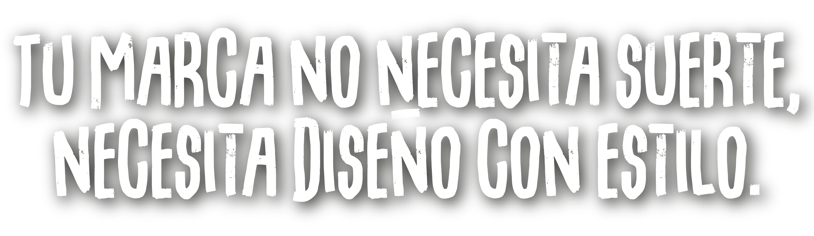
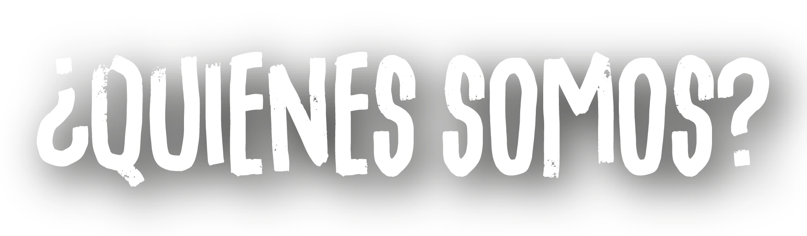

Diseño gráfico, contenido y creatividad con flow para marcas reales

En Qket-Zá, diseñamos más que imágenes. Creamos identidad, actitud y conexión con tu público. Logos, contenido, gifs, diseño editorial, diseño y creación de Landing page y más. Sin límite de ideas, con mucho flow.